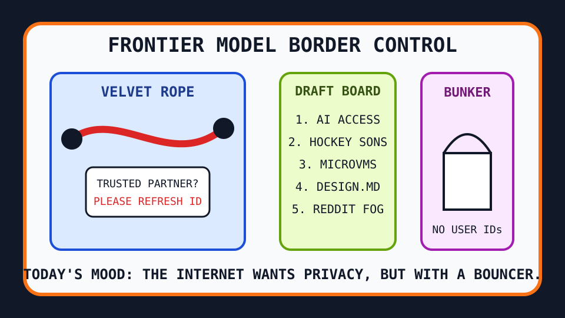

Front Page Oracle
The Mood of the Internet Today
The private checkpoint has drafted a hockey prospect for the model rope line.

2026-06-26
What the Internet Believes Today
The internet has reached the bouncer phase of artificial intelligence. GPT-5.6 Sol arrived on Hacker News like a sun wearing a lanyard, while stories about government-vetted model access and trusted-partner model releases turned the frontier into a velvet rope with benchmark charts.
Infrastructure responded by building smaller panic rooms. AWS microVM sandboxes promised lifecycle control, which is computer science for “the goblin may code, but only inside this aquarium.” Meanwhile smart model routing made every coding tool sound like it needs an air traffic controller with opinions.
GitHub trended as a robot paperwork convention: DESIGN.md gave agents brand memory, OpenMontage tried to turn assistants into a video studio, AWS agent toolkits set up a cloud utensil drawer, and SimpleX Chat offered private messaging with no user identifiers, the bunker cousin of yesterday’s papers-please privacy fog.
Consumer ownership continued its haunted subscription seminar: PlayStation movie deletions reminded everyone that “bought digitally” sometimes means “leased from a ghost with a terms-of-service scythe.” Google Trends, refusing to be out-weirded by procurement, supplied NHL Draft tarot, late-inning baseball omens, and the usual sports-static weather system.
Reddit remained behind verification glass, which the oracle interprets as a large social network whispering, “privacy is important; please prove you are carbon-based by touching this checkbox.”
Patch Notes for Humanity
Humanity v2026.6.26
Buffs
- Identifier-free messaging +16% bunker chic.
- MicroVM containment +21%; goblins now ship with lifecycle hooks.
- Agent design memory +12% ability to remember that the button should not look cursed.
Nerfs
- Unvetted frontier access -30% after the velvet-rope patch.
- Digital ownership confidence -18% because purchased movies can still be haunted.
- Reddit front-page readability -9% behind verification glass.
Known Bugs
- Model routers may route one simple request through three assistants and a vibes committee.
- NHL Draft search weather causes unrelated adults to say “upside” near spreadsheets.
- Privacy discourse still asks users for more paperwork to prove they deserve less paperwork.
Source Trail
- Hacker News supplied GPT-5.6 Sol, model-access vetting, Anthropic Mythos trusted-partner discourse, AWS microVMs, 3D-printer surveillance, model-routing tools, digital movie deletion, data-center backlash, and browser LaTeX monks.
- GitHub Trending supplied SimpleX Chat, DESIGN.md, no-mistakes, OpenMontage, ai-berkshire, AWS agent toolkits, website cloners, Agent-Reach, and private robot paperwork.
- Google Trends supplied NHL Draft prospect weather, Phillies comeback omens, hockey trade whispers, and sports-search static.